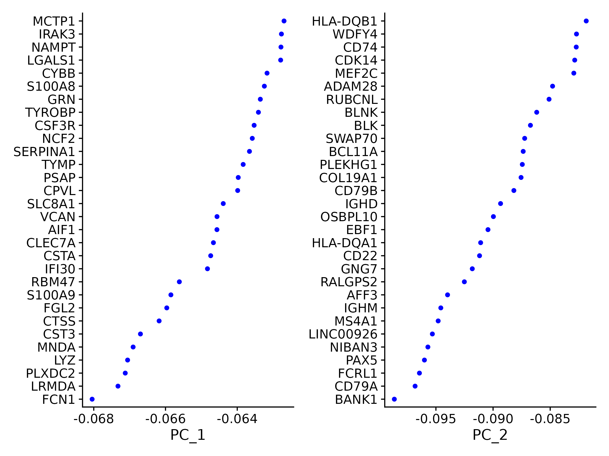
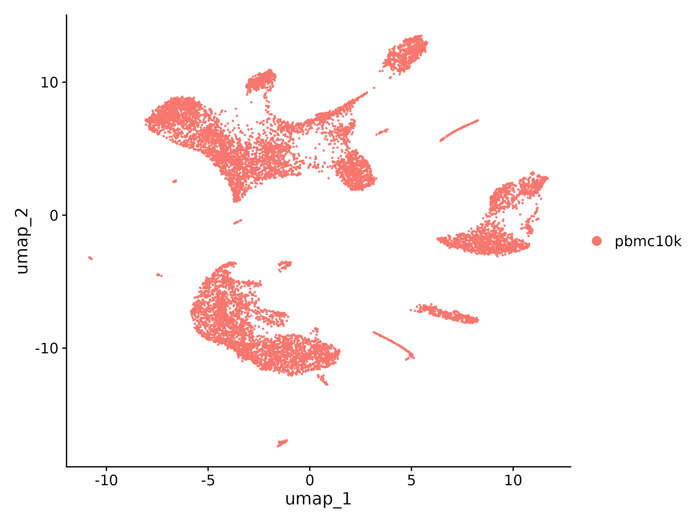
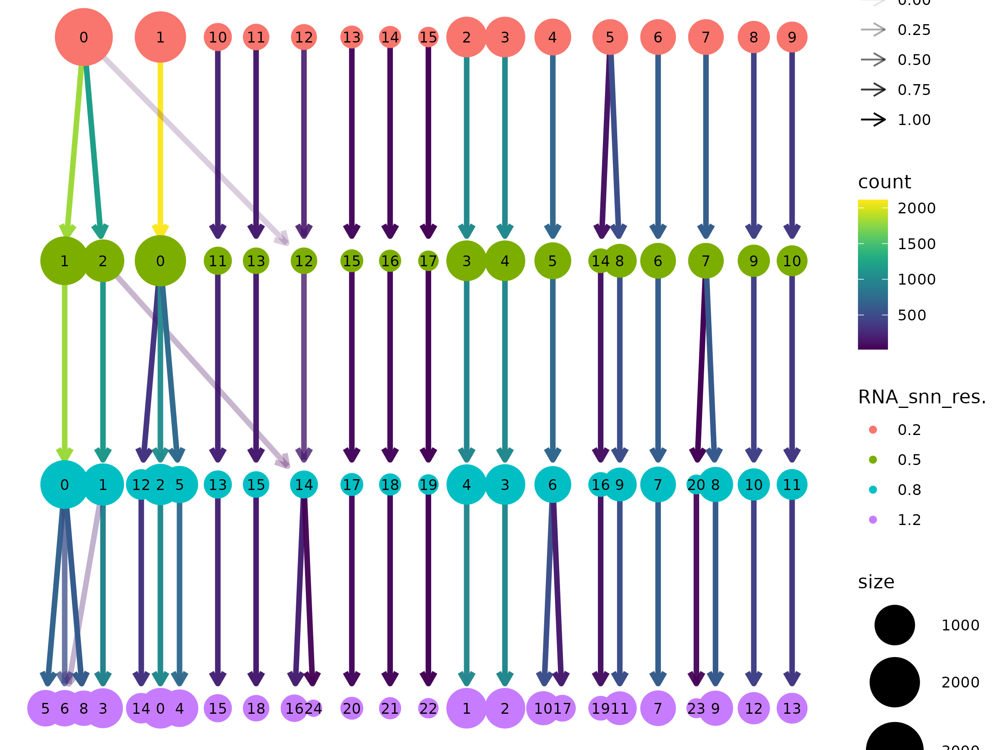
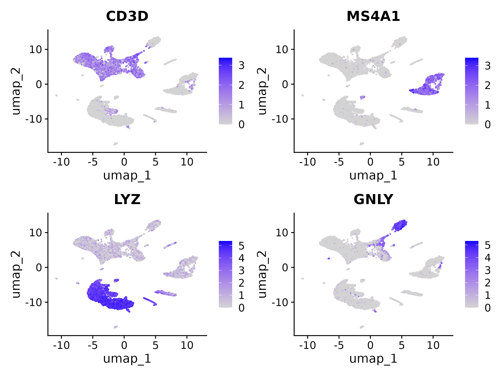
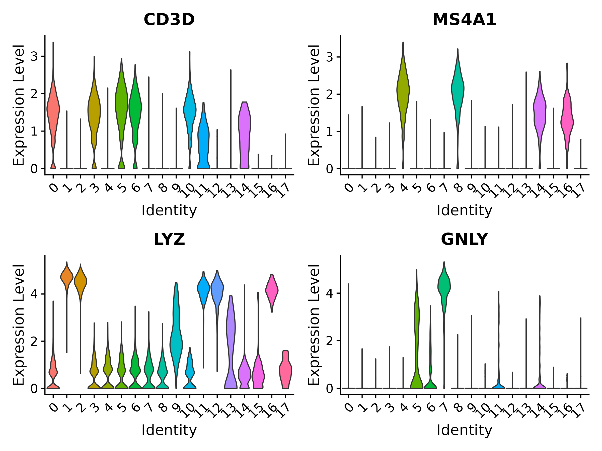
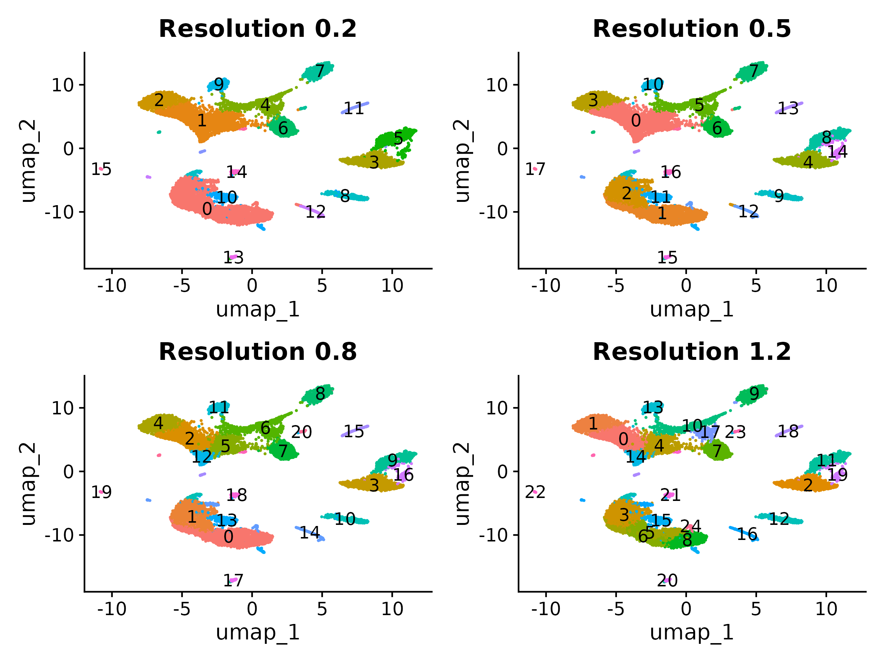
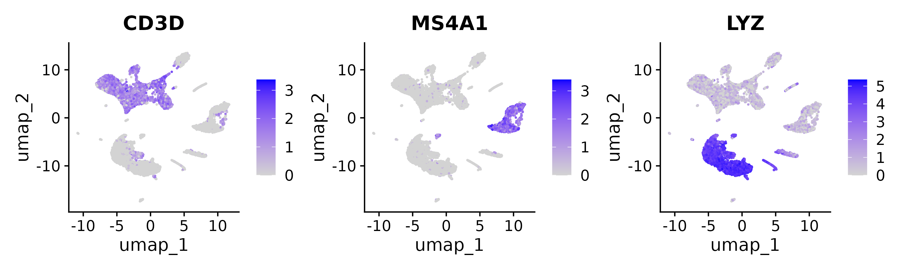
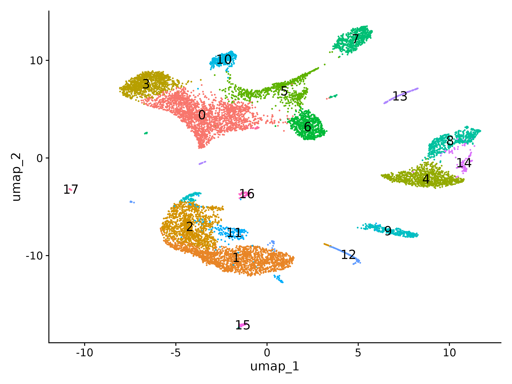

Dimensionality Reduction and Clustering
Last updated on 2026-07-21 | Edit this page
Estimated time: 60 minutes
Overview
Questions
- Why do we need to reduce the dimensions of scRNA-seq data before clustering?
- How do we choose the right number of principal components?
- What does UMAP show us and what can it NOT tell us?
- How does graph-based clustering work and what does the resolution parameter control?
- How do we evaluate whether our clustering resolution is appropriate?
Objectives
- Run PCA on variable features and select an appropriate number of PCs using the elbow plot
- Generate a UMAP embedding for 2D visualization of cell relationships
- Construct a shared nearest neighbor graph and identify clusters with the Louvain algorithm
- Explore multiple clustering resolutions and use clustree to assess cluster stability
- Visualize known marker genes on the UMAP to preview cell type identity
Prerequisites
This episode requires an RStudio session on the Negishi cluster.
Launch RStudio (bioconductor) under
Bioinformatics Apps on Open OnDemand as
described in the Setup
instructions. You will also need the pbmc_normalized.rds
object saved at the end of the previous episode.
Setup
R
library(Seurat)
library(ggplot2)
library(patchwork)
library(clustree)
Loading the Normalized Data
We start from the normalized, scaled Seurat object saved at the end
of the previous episode. This object has the counts,
data, and scale.data layers populated, with
2,000 variable features selected.
Set up the working directory to match the previous episodes:
R
work_dir <- paste0(
"/scratch/negishi/", Sys.getenv("USER"),
"/scrna_workshop/"
)
setwd(work_dir)
R
pbmc <- readRDS(paste0(work_dir, "pbmc_normalized.rds"))
pbmc
OUTPUT
An object of class Seurat
29155 features across 11310 samples within 1 assay
Active assay: RNA (29155 features, 2000 variable features)
3 layers present: counts, data, scale.dataPrincipal Component Analysis (PCA)
Our dataset has ~2,000 variable features, but many of these genes are correlated – they go up and down together across cells because they are co-regulated in the same cell types. PCA (Principal Component Analysis) exploits these correlations to compress the data into a smaller set of principal components (PCs). Each PC is a linear combination of genes that captures a distinct axis of variation in the data.
The key properties of PCA:
- PC1 captures the direction of greatest variance across all cells
- PC2 captures the next greatest variance, orthogonal to PC1
- Each subsequent PC captures decreasing amounts of variance
- The first 10–20 PCs typically capture the major biological structure (cell types), while later PCs are dominated by noise
R
pbmc <- RunPCA(pbmc, features = VariableFeatures(object = pbmc))
| Parameter | Value | Description |
|---|---|---|
features |
VariableFeatures(object = pbmc) |
Which genes to use for PCA. We use the 2,000 variable features selected in the previous episode. |
By default, Seurat computes 50 PCs. Let’s examine which genes drive the first two components:
R
VizDimLoadings(pbmc, dims = 1:2, reduction = "pca")

Each point represents a gene’s loading (contribution) to that PC. For PC1, you should see monocyte/myeloid markers (CST3, LYZ, S100A9, FCN1) among the top genes. This tells us that PC1 separates myeloid from lymphoid cells – the largest source of variation in PBMCs. PC2 is dominated by B cell markers (BANK1, CD79A, MS4A1, PAX5), indicating that B cells are the next major axis of variation.
We can also visualize PCs as heatmaps to see which genes and cells contribute most:
R
DimHeatmap(pbmc, dims = 1:9, cells = 500, balanced = TRUE)
| Parameter | Value | Description |
|---|---|---|
dims |
1:9 |
Which PCs to plot. |
cells |
500 |
Number of cells to include (randomly sampled from each extreme of the PC). |
balanced |
TRUE |
Plot equal numbers of cells from the positive and negative ends of each PC. |
Each heatmap shows the top genes (rows) ordered by their loading, with cells (columns) ordered by their PC score. Clear blocks of correlated expression indicate PCs that capture real biological structure. PCs that look noisy (no clear pattern) are capturing technical variation or random noise.

Choosing the number of PCs
Not all 50 PCs are informative. Later PCs capture decreasing amounts of variance and eventually become dominated by noise. We need to decide how many PCs to retain for downstream steps (UMAP and clustering).
The elbow plot shows the standard deviation explained by each PC:
R
ElbowPlot(pbmc, ndims = 30)
Look for the elbow – the point where the curve transitions from steep decline to a flatter plateau. PCs before the elbow capture substantial biological signal; PCs after the elbow are mostly noise.
How many PCs?
For the PBMC 10k dataset, the elbow typically falls around PC 12–15. We will use 15 PCs for the rest of this episode.
In practice, the exact number is not critical. Using 10 vs. 20 PCs usually produces very similar clustering results for well-separated cell types. The choice matters more for subtle distinctions between closely related populations.
When in doubt, err on the side of including more PCs (e.g., 20). Using too few PCs risks losing biological signal from rarer cell types. Using a few extra PCs adds a small amount of noise but rarely changes the major structure.
An alternative to visual inspection is the JackStraw
procedure (JackStrawPlot()), which uses a permutation test
to identify statistically significant PCs. However, it is
computationally expensive for large datasets and is rarely necessary
when the elbow is clear.
UMAP Visualization
PCA reduces our data from 2,000 dimensions to 15, but we still cannot visualize 15 dimensions directly. UMAP (Uniform Manifold Approximation and Projection) further reduces the data to just 2 dimensions for plotting. Unlike PCA, UMAP is a non-linear method: it can unfold complex relationships that PCA cannot capture, placing similar cells close together and dissimilar cells far apart in 2D space.
R
pbmc <- RunUMAP(pbmc, dims = 1:15)
| Parameter | Value | Description |
|---|---|---|
dims |
1:15 |
Which PCs to use as input. We use the 15 PCs selected above. |
Visualize the UMAP embedding:
R
DimPlot(pbmc, reduction = "umap")

At this point, cells are not yet clustered (all are the same color). But you can already see that cells organize into distinct groups on the UMAP. These groups correspond to different cell types.
UMAP parameters
UMAP has two key parameters that control the appearance of the plot:
| Parameter | Default | Effect |
|---|---|---|
n.neighbors |
30 | Controls the balance between local and global structure. Low values (5–15) emphasize local neighborhoods, producing tighter clusters. High values (50–200) emphasize global structure, producing smoother layouts. |
min.dist |
0.3 | Controls how tightly UMAP packs points. Low values (0.01–0.1) produce dense, compact clusters. High values (0.5–1.0) spread clusters out more evenly. |
The defaults work well for most datasets. Adjusting these parameters changes the visual appearance of the plot but does not change the underlying data or the clustering results (which operate on PCA space, not UMAP space).
UMAP interpretation pitfalls
UMAP plots are powerful visualization tools, but they can be misleading if over-interpreted. Three things you should NOT infer from a UMAP:
Distances between clusters do not reflect true biological similarity. Two clusters that appear far apart on the UMAP may actually be transcriptionally very similar, and vice versa. UMAP distorts global distances to preserve local neighborhoods.
Cluster size on the plot does not reflect population size. A large, spread-out cluster may contain fewer cells than a small, compact one. UMAP adjusts spacing to show local structure, not proportional representation.
Different random seeds produce different layouts. Running UMAP twice with different seeds will give a different arrangement of clusters. The overall groupings will be the same (the same cells will cluster together), but their positions and orientations on the plot will differ. Never compare spatial positions across two separate UMAP runs.
Always verify biological conclusions with quantitative methods (marker gene expression, differential expression tests, cluster composition statistics) rather than relying on visual impressions from UMAP alone.
t-SNE as an alternative
Before UMAP became standard, t-SNE (t-distributed
Stochastic Neighbor Embedding) was the most common visualization method
for scRNA-seq. You can run it with
RunTSNE(pbmc, dims = 1:15). t-SNE is similar in purpose to
UMAP but tends to be slower and produces rounder, more separated
clusters. The same interpretation caveats apply. Most current analyses
use UMAP because it is faster, better preserves global structure, and
scales better to large datasets.
Graph-Based Clustering
With the PCA embedding computed, we can now group cells into clusters. Seurat uses a graph-based clustering approach that works in two steps:
Step 1: Build a neighbor graph
FindNeighbors() constructs a K-nearest neighbor
(KNN) graph in PCA space. For each cell, it identifies its
k most similar cells based on Euclidean distance in the first
15 PCs. These connections are then refined into a shared nearest
neighbor (SNN) graph, where the connection strength between two
cells depends on how much their neighborhoods overlap.
R
pbmc <- FindNeighbors(pbmc, dims = 1:15)
| Parameter | Value | Description |
|---|---|---|
dims |
1:15 |
Which PCs to use for computing distances. Must match the PCs used for UMAP. |
k.param |
20 (default) |
Number of nearest neighbors per cell. Higher values produce a more connected graph with smoother clustering. Lower values preserve finer local structure. |
Step 2: Detect communities
FindClusters() applies a community detection
algorithm to the SNN graph. The algorithm finds groups of cells
that are densely connected to each other but sparsely connected to the
rest of the graph. The resolution parameter controls
the granularity of clustering:
R
pbmc <- FindClusters(pbmc, resolution = 0.5)
| Parameter | Value | Description |
|---|---|---|
resolution |
0.5 |
Controls the number of clusters. Lower values (0.1–0.3) produce fewer, larger clusters. Higher values (1.0–2.0) produce more, smaller clusters. |
algorithm |
1 (default) |
Community detection method. 1 = Louvain (default, fast
and reliable). 4 = Leiden (more robust against poorly
connected clusters, requires the leidenalg Python
package). |
At resolution 0.5, you should get approximately 18 clusters, numbered starting from 0. The exact number may vary slightly depending on random seed and software versions.
OUTPUT
Modularity Optimizer version 1.3.0 by Ludo Waltman and Nees Jan van Eck
Number of nodes: 11310
Number of edges: 410535
Running Louvain algorithm...
Maximum modularity in 10 random starts: 0.9317
Number of communities: 18
Elapsed time: 1 secondsThe cluster assignments are stored in the object metadata. Let’s check them:
R
head(Idents(pbmc))
table(Idents(pbmc))
OUTPUT
AAACCCAAGCGCCCAT-1 AAACCCAAGGTTCCGC-1 AAACCCACAGACAAGC-1 AAACCCACAGAGTTGG-1 AAACCCACAGGTATGG-1
0 12 13 1 7
AAACCCACATAGTCAC-1
4
Levels: 0 1 2 3 4 5 6 7 8 9 10 11 12 13 14 15 16 17
0 1 2 3 4 5 6 7 8 9 10 11 12 13 14 15 16 17
2112 1810 1187 1015 1006 716 639 634 517 429 357 234 176 175 122 78 64 39 Cluster 0 is the largest with 2,112 cells (T cells, which are the most abundant PBMC type). Cluster 17 is the smallest with only 39 cells (likely a rare population like platelets or dendritic cells).
Now let’s visualize the clusters on the UMAP:
R
DimPlot(pbmc, reduction = "umap", label = TRUE, label.size = 5) +
NoLegend()

Exploring multiple resolutions
The resolution parameter is the most important choice in clustering. Too low and distinct cell types are merged; too high and single cell types are split into artificial sub-clusters. The best way to evaluate the right resolution is to try several and compare.
R
pbmc <- FindClusters(pbmc, resolution = 0.2)
pbmc <- FindClusters(pbmc, resolution = 0.5)
pbmc <- FindClusters(pbmc, resolution = 0.8)
pbmc <- FindClusters(pbmc, resolution = 1.2)
Each call adds a new column to the metadata named
RNA_snn_res.X (where X is the resolution value). We can
visualize how cells move between clusters at different resolutions using
clustree:
R
clustree(pbmc, prefix = "RNA_snn_res.")

In the clustree plot, each row is a resolution and each node is a cluster. Arrows show how cells move between clusters as resolution increases. Look for:
- Clean splits: one cluster at a lower resolution cleanly divides into two at a higher resolution. This suggests a real biological distinction.
- Unstable splits: cells from one cluster scatter across multiple clusters at a higher resolution, or cells bounce between clusters. This suggests over-splitting.
Set the active cluster identity to our chosen resolution:
R
Idents(pbmc) <- "RNA_snn_res.0.5"
Save the clustered object for the next episode:
R
saveRDS(pbmc, file = "pbmc_clustered.rds")
Exploring Clusters
Before formal cell type annotation (next episode), we can already preview cell identity by overlaying known marker genes on the UMAP. If our clustering is good, each marker should light up in a distinct cluster.
R
FeaturePlot(pbmc,
features = c("CD3D", "MS4A1", "LYZ", "GNLY"),
ncol = 2)

| Gene | Cell type | Expected pattern |
|---|---|---|
CD3D |
T cells | Lights up the large T cell clusters (the biggest groups on the UMAP) |
MS4A1 |
B cells | Lights up a compact cluster separate from T cells |
LYZ |
CD14+ Monocytes | Lights up monocyte clusters, distinct from lymphocytes |
GNLY |
NK cells | Lights up a cluster adjacent to but separate from T cells |
We can also view these markers as violin plots to see the expression distribution across clusters:
R
VlnPlot(pbmc,
features = c("CD3D", "MS4A1", "LYZ", "GNLY"),
ncol = 2,
pt.size = 0)

Even without formal annotation, you can see that these markers segregate cleanly into distinct clusters. CD3D marks several clusters (T cell subtypes), MS4A1 is specific to one cluster (B cells), LYZ is strong in one or two clusters (monocytes), and GNLY is specific to another (NK cells). This gives us confidence that the clustering is capturing biologically meaningful groupings. In the next episode, we will systematically identify marker genes for every cluster and assign cell type labels.
Challenge 1: Choosing a Resolution with Clustree
Run clustering at resolutions 0.2, 0.5, 0.8, and 1.2 (we already did
this above). Use the clustree plot to answer:
- At which resolution do clusters start splitting unstably?
- Which resolution gives a number of clusters that best matches the known PBMC cell types (~8–10 major types)?
- How many clusters do you get at each resolution?
R
# Count clusters at each resolution
cat("Resolution 0.2:", length(unique(pbmc$RNA_snn_res.0.2)), "clusters\n")
cat("Resolution 0.5:", length(unique(pbmc$RNA_snn_res.0.5)), "clusters\n")
cat("Resolution 0.8:", length(unique(pbmc$RNA_snn_res.0.8)), "clusters\n")
cat("Resolution 1.2:", length(unique(pbmc$RNA_snn_res.1.2)), "clusters\n")
# Visualize side by side
p1 <- DimPlot(pbmc, group.by = "RNA_snn_res.0.2", label = TRUE) +
NoLegend() + ggtitle("Resolution 0.2")
p2 <- DimPlot(pbmc, group.by = "RNA_snn_res.0.5", label = TRUE) +
NoLegend() + ggtitle("Resolution 0.5")
p3 <- DimPlot(pbmc, group.by = "RNA_snn_res.0.8", label = TRUE) +
NoLegend() + ggtitle("Resolution 0.8")
p4 <- DimPlot(pbmc, group.by = "RNA_snn_res.1.2", label = TRUE) +
NoLegend() + ggtitle("Resolution 1.2")
(p1 + p2) / (p3 + p4)

Expected cluster counts:
| Resolution | Approximate clusters |
|---|---|
| 0.2 | 16 |
| 0.5 | 18 |
| 0.8 | 21 |
| 1.2 | 25 |
Resolution 0.5 gives 18 clusters, which captures the 8 major PBMC cell types (CD4+ T, CD8+ T, B cells, CD14+ monocytes, FCGR3A+ monocytes, NK cells, dendritic cells, platelets) along with some sub-clusters (e.g., naive vs. memory T cells), which is biologically reasonable.
Resolution 0.2 under-clusters with 16 clusters: it merges some distinct cell subtypes. You may lose meaningful biological distinctions.
Resolution 0.8 starts to over-split with 21 clusters: the clustree plot shows clusters from resolution 0.5 splitting into sub-clusters, with some cells moving between clusters in ways that are not stable. This does not mean 0.8 is wrong – it may reveal real sub-populations – but the splits become harder to annotate confidently.
Resolution 1.2 clearly over-splits with 25 clusters, many of which are fragments of the same cell type. The clustree plot shows extensive cross-cluster mixing at this resolution.
For this workshop we use resolution 0.5 as a good balance between capturing distinct cell types and avoiding excessive fragmentation.
Challenge 2: Mapping Markers to Clusters
Use FeaturePlot() to visualize three markers on the
UMAP:
- CD3D (T cells)
- MS4A1 (B cells)
- LYZ (monocytes)
Then use the cluster-labeled UMAP to determine which cluster number(s) correspond to each cell type.
R
FeaturePlot(pbmc, features = c("CD3D", "MS4A1", "LYZ"), ncol = 3)
DimPlot(pbmc, reduction = "umap", label = TRUE, label.size = 5) + NoLegend()


By comparing the FeaturePlot panels with the labeled UMAP, you should see the following pattern (exact cluster numbers may differ depending on your run):
| Marker | Cell type | Cluster(s) |
|---|---|---|
| CD3D | T cells | Clusters 0, 2, 3, 5, 6 (several groups across the upper-left and lower-left UMAP). CD3D is expressed in both CD4+ and CD8+ T cells, so it marks multiple clusters. |
| MS4A1 | B cells | Cluster 7 (a compact, clearly separated group in the upper-right). MS4A1 (also known as CD20) is highly specific to B cells. |
| LYZ | CD14+ Monocytes | Clusters 1 and 2 (large groups in the lower portion of the UMAP). You may also see weaker LYZ expression in a smaller monocyte cluster (FCGR3A+). |
The fact that each marker cleanly maps to specific clusters confirms that our clustering at resolution 0.5 is capturing meaningful biological groupings. Notice that CD3D marks multiple clusters – this is expected because there are several T cell subtypes (CD4+ naive, CD4+ memory, CD8+) that form separate clusters but all express the pan-T cell marker CD3D.
In the next episode, we will use FindAllMarkers() to
systematically identify the genes that define each cluster and assign
proper cell type labels.
- PCA reduces ~2,000 variable genes to ~15 principal components that capture the major axes of biological variation
- The elbow plot helps choose how many PCs to retain; for PBMCs, 15 PCs is typically sufficient
- UMAP provides an intuitive 2D visualization but should not be used to infer distances, cluster sizes, or quantitative relationships
- Graph-based clustering builds a shared nearest neighbor graph in PCA space and detects communities using the Louvain or Leiden algorithm
- The resolution parameter controls clustering granularity; clustree helps identify the resolution where clusters begin to split unstably